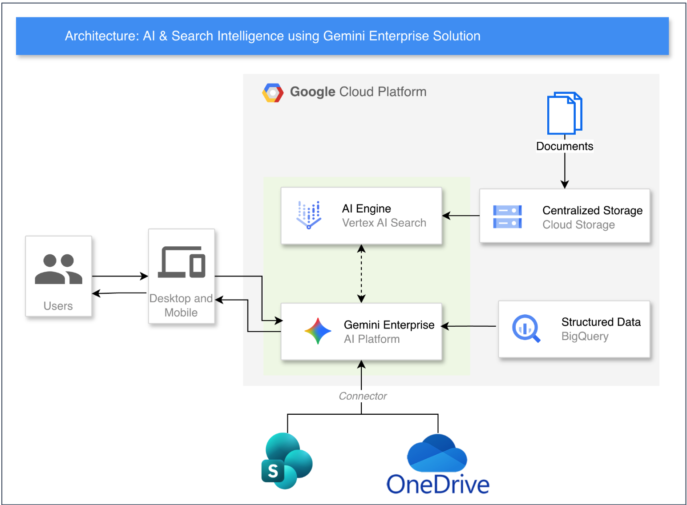
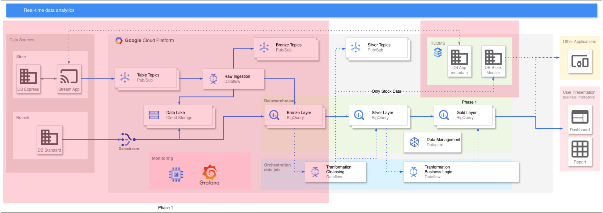
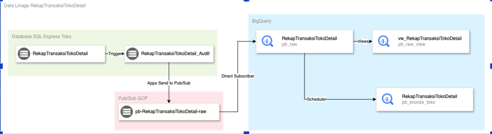
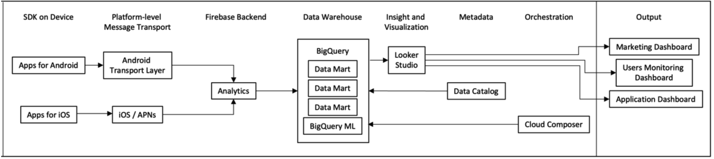
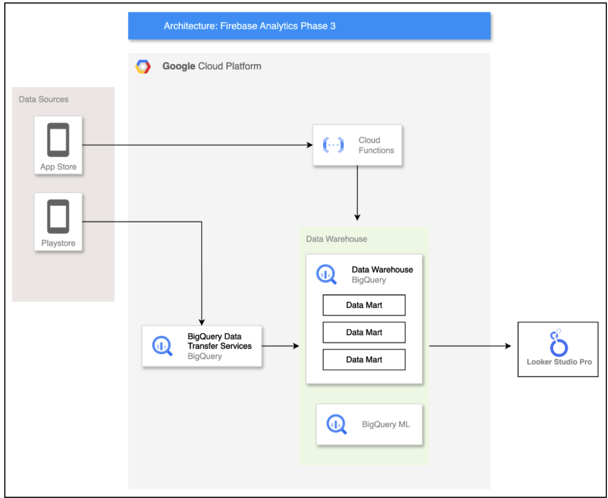

Data & Machine Learning Engineer
PT Smartnet Magna Global
Predictive Maintenance Spare Part Motor
Memprediksi kapan sebuah motor perlu penggantian spare part dan ganti oli, menggunakan data yang diekstraksi dari foto odometer dan plat nomor. Seluruh pipeline berjalan on-premise dengan Python.
Parameter model
- Odometer — jarak tempuh motor (km) hasil ekstraksi dari foto odometer.
- Pembaruan spare part — riwayat kapan dan pada kilometer berapa spare part terakhir diganti.
- Lamanya ganti oli — rentang waktu sejak penggantian oli terakhir.
High-Level Architecture (On-Premise · Python)
Geser diagram ke samping untuk melihat seluruhnya →
- Input gambar: foto odometer dan plat nomor motor dikumpulkan dan disimpan di server on-premise.
- Ekstraksi gambar → tabular: program Python membaca angka odometer dan plat nomor dari gambar, lalu menyimpannya sebagai baris data tabular (plat nomor, odometer, tanggal).
- Penggabungan riwayat servis: data tabular digabungkan berdasarkan plat nomor dengan riwayat pembaruan spare part dan ganti oli.
- Feature engineering & model: odometer, jarak tempuh sejak spare part terakhir diganti, dan lamanya sejak ganti oli terakhir menjadi input model prediktif berbasis Python.
- Output: prediksi kebutuhan penggantian spare part dan ganti oli per motor, sebagai dasar penjadwalan maintenance.
Generative AI & Distributed Multi-Agent Architecture
Inisiatif strategis pemanfaatan kecerdasan buatan otonom untuk otomasi analisis dan pembuatan kampanye pemasaran berbasis data.
Distributed Multi-Agent Generative AI System
Merancang dan mengimplementasikan sistem multi-agent terdistribusi otonom di Google Cloud Platform. Agen-agen ini mengagregasi analitik BigQuery, integrasi API finansial pihak ketiga, dan pemodelan generative AI multimodal (Google Gemini & Imagen) untuk menghasilkan kampanye pemasaran berbasis data lokal secara dinamis dan terstruktur.
Automated AI Data Feeding & Latency Reduction
Mengimplementasikan alur kerja Apache Airflow untuk mengotomatiskan penarikan data PostgreSQL langsung ke BigQuery, memangkas latensi transfer data sebesar 30% dan mempercepat kapabilitas penyajian konteks data untuk aplikasi Generative AI.
Arsitektur: AI & Search Intelligence using Gemini Enterprise Solution
Enterprise AI & RAG Architecture
Solusi terpadu pencarian cerdas dan pemrosesan dokumen berbasis AI di Google Cloud Platform yang menghubungkan data enterprise terstruktur dan tidak terstruktur dengan Large Language Model multimodal.
1. Ingestion Dokumen Terpusat
Dokumen korporat disimpan secara terpusat di Google Cloud Storage (GCS) sebagai basis pengetahuan data tak terstruktur.
2. Vertex AI Search & Indexing
Vertex AI Search mem-parsing dan mengindeks dokumen untuk semantic vector search berkecepatan tinggi dalam kerangka Retrieval-Augmented Generation (RAG).
3. Konektor SharePoint & OneDrive
Integrasi konektor pihak ketiga menyinkronkan repositori Microsoft SharePoint dan OneDrive ke lingkungan AI secara aman.
4. Grounding Gemini & BigQuery
Platform Gemini Enterprise melakukan grounding kueri dengan metrik terstruktur BigQuery dan dokumen untuk menyajikan respons akurat ke desktop dan mobile.
Ingestion Skala Besar & Streaming Pipelines
Pengembangan jalur data bervolume tinggi, penanganan data real-time, dan migrasi basis data NoSQL.
ETL Firebase ke Google BigQuery
Merancang dan memelihara pipeline ETL untuk memproses lebih dari 1TB data dari Firebase ke Google BigQuery, meningkatkan aksesibilitas dan ketersediaan data analitik untuk tim data science dan business intelligence.
Streamlined Real-Time Data Ingestion
Mengembangkan pipeline streaming real-time ke BigQuery memanfaatkan GCP Pub/Sub dan Cloud Dataflow. Mengintegrasikan logika transformasi in-flight untuk memfilter kolom audit redundan secara langsung, mengurangi overhead dan biaya penyimpanan hilir secara signifikan.
Automated NoSQL Database Migration
Merekayasa pipeline migrasi data otomatis tanpa kendala (seamless migration) untuk memindahkan beban kerja NoSQL dari on-premise Apache Cassandra ke Google Cloud Bigtable terkelola.
Arsitektur Real-Time Data Analytics & Medallion Data Warehouse (Retail DWH)
Real-Time Streaming & Medallion DWH
Rancangan arsitektur streaming data skala besar dari ratusan database toko (DB Express) dan cabang (DB Standard) menuju BigQuery Medallion Architecture (Bronze, Silver, Gold).
1. Ingestion Datastream & Pub/Sub
Menangkap transaksi kasir toko secara realtime via Stream App ke GCP Pub/Sub Topics dan CDC Datastream dari DB Standard cabang.
2. Stream Processing via Dataflow
Cloud Dataflow menjalankan raw ingestion ke Data Lake (Cloud Storage) dan pembersihan data (cleansing & deduplication) in-flight.
3. BigQuery Medallion Architecture
Alur data bertingkat: Bronze Layer (raw events), Silver Layer (data bersih), dan Gold Layer (agregasi data mart penjualan & stok toko).
4. Observabilitas & Penyajian BI
Tata kelola data terpusat via Google Cloud Dataplex, visualisasi metrik sistem di Grafana, dan pelaporan real-time ke BI Dashboard.
Data Lineage Transaksi Toko: RekapTransaksiTokoDetail
Data Lineage & CDC Ingestion
Silsilah alur data terperinci dari level trigger basis data SQL Express di gerai toko lokal hingga tersaji di tabel analitik Google BigQuery.
1. Trigger Tabel Audit Toko
Perubahan data di tabel RekapTransaksiTokoDetail mengaktifkan trigger otomatis yang mencatat log audit ke RekapTransaksiTokoDetail_Audit.
2. Publikasi ke GCP Pub/Sub
Aplikasi toko mengekstrak baris audit dan menerbitkannya ke topik GCP Pub/Sub: pb-RekapTransaksiTokoDetail-raw.
3. BigQuery Direct Subscription
Direct Subscriber BigQuery menyerap streaming message langsung ke tabel raw RekapTransaksiTokoDetail tanpa delay batch.
4. Analytical View & Scheduler
View analitik vw_RekapTransaksiTokoDetail memfilter kolom redundan, dan Cloud Scheduler memprosesnya ke tabel produksi pb_bronze_toko.
1. Firebase Analytics – Phase 1
Firebase Analytics – Phase 1
- SDK on Device: Data dikumpulkan dari aplikasi Android dan iOS.
- Platform-level Message Transport: Android menggunakan Android Transport Layer, sedangkan iOS menggunakan iOS/APNs.
- Firebase Backend: Kedua jalur data masuk ke modul Analytics di Firebase.
- Data Warehouse (BigQuery): Data disimpan dan diorganisasi ke dalam beberapa Data Mart, serta diproses lebih lanjut dengan BigQuery ML.
-
Metadata & Orkestrasi:
- Data Catalog menyediakan metadata untuk memperkaya Data Mart.
- Cloud Composer mengatur orkestrasi job/pipeline menuju BigQuery ML.
- Insight and Visualization: Data dari BigQuery divisualisasikan menggunakan Looker Studio.
-
Output: Hasil akhir ditampilkan dalam 3 dashboard berbeda:
- Marketing Dashboard
- Users Monitoring Dashboard
- Application Dashboard
2. Firebase Analytics – Phase 3
Firebase Analytics – Phase 3
- Data Sources: Data berasal dari App Store dan Playstore (bukan lagi dari SDK aplikasi langsung).
-
Google Cloud Platform:
- Data dari App Store diproses lebih dulu melalui Cloud Functions.
- Data dari Playstore langsung masuk ke BigQuery Data Transfer Service.
- Output dari Cloud Functions juga diarahkan ke Data Warehouse.
-
Data Warehouse (BigQuery):
- Berisi beberapa Data Mart.
- Dilengkapi dengan BigQuery ML untuk pemrosesan/analitik lanjutan.
- Output: Hasil akhir divisualisasikan melalui Looker Studio Pro (versi pro, lebih advanced dibanding Looker Studio biasa pada Phase 1).
Data Orchestration, Transformation & Analytics
Standardisasi logika bisnis dan percepatan kueri eksploratif data warehouse.
Orchestration via Apache Airflow & dbt
Mengorkestrasi tahapan ingestion, transformasi, dan uji kualitas data otomatis menggunakan Apache Airflow dan dbt (data build tool). Berhasil meningkatkan kesegaran data (freshness) sebesar 30% dan menjamin konsistensi logika bisnis di seluruh dataset perusahaan.
Integrasi ClickHouse Columnar Storage
Mengintegrasikan ClickHouse untuk pengujian analitik berkinerja tinggi pada proyek proof-of-concept (POC), menghasilkan akselerasi drastis dalam eksplorasi dan query analitik dataset berukuran besar.
5+ Dashboard Interaktif Looker
Membangun 5+ dashboard analitik interaktif di Looker untuk kebutuhan pelaporan real-time manajemen, mengotomatiskan alur kerja dan memangkas pemrosesan data manual hingga 40%.
Optimasi & Desain Basis Data
Merancang dan mengoptimalkan skema basis data pada lebih dari 3 aplikasi produksi, menghasilkan peningkatan performa kueri rata-rata sebesar 30%.
Tata Kelola Arsitektur & Manajemen Proyek
Menyelaraskan rancangan arsitektur teknis dengan sasaran bisnis strategis para pemangku kepentingan.
Dokumentasi Kebutuhan Bisnis & Fungsional
Menyusun 3+ Business Requirements Documents (BRD) dan Functional Specification Documents (FSD) komprehensif, mengeliminasi ambiguitas kebutuhan proyek dan memangkas revisi stakeholder hingga 20%.
Rancangan Arsitektur Sistem & Spesifikasi Teknis
Membuat 3+ System Architecture Documents (SAD) dan Technical Specification Documents (TSD), menyelaraskan rancang bangun teknis dengan objektif bisnis serta meningkatkan kejelasan tahap development sebesar 15%.
Analisis Kebutuhan Lintas Tim
Menganalisis kebutuhan teknis untuk 4+ inisiatif proyek, memfasilitasi komunikasi efektif antara stakeholder bisnis dan developer, serta memotong miskomunikasi sebesar 25%.
Supervisi Developer & Validasi Kualitas
Memonitor pengerjaan tugas tim developer untuk 5+ proyek (menekan keterlambatan task hingga 10%) dan memvalidasi hasil pengujian untuk 4+ proyek dengan tingkat kepatuhan spesifikasi mencapai 90%.